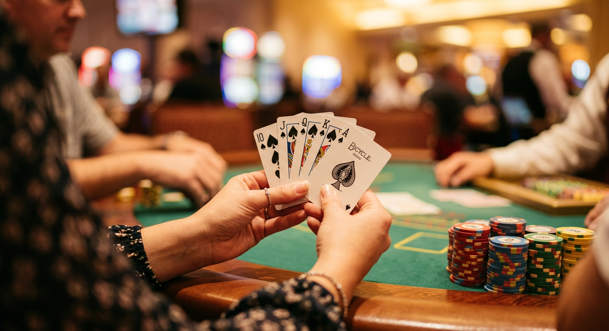
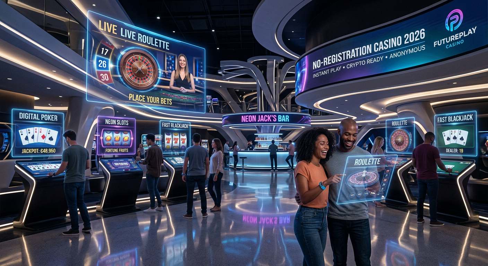
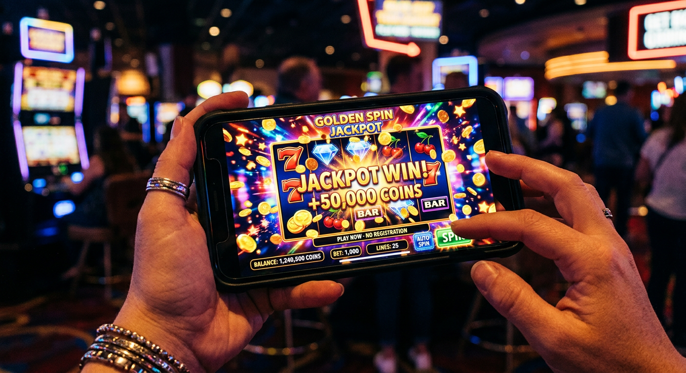
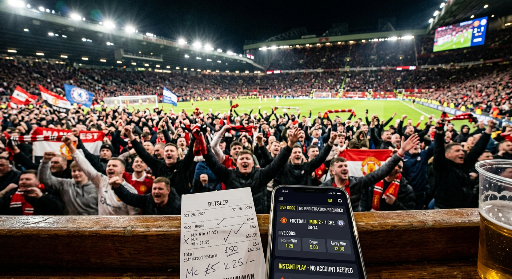

Casino zonder registratie: De ultieme gids voor 2026
In het dynamische landschap van online kansspelen is 2026 het jaar waarin de efficiëntie van een casino zonder registratie de absolute standaard is geworden. Nederlandse spelers zijn steeds vaker op zoek naar manieren om direct te kunnen spelen zonder de langdurige en vaak frustrerende aanmeldingsformulieren in te vullen. De opkomst van nieuwe technologieën en gestroomlijnde verificatieprocessen heeft ervoor gezorgd dat een account aanmaken bijna tot het verleden behoort. In deze uitgebreide gids duiken we diep in de wereld van no-account gokken, de veiligheidsaspecten in 2026 en hoe jij de beste deals kunt vinden.
Het concept van een casino zonder registratie is simpel: je stort geld via een vertrouwde bankmethode en je identiteit wordt op de achtergrond geverifieerd. Dit bespaart niet alleen tijd, maar verhoogt ook de privacy van de speler. Met de integratie van systemen zoals iDIN en geavanceerde Pay N Play oplossingen is de drempel om een gokje te wagen lager dan ooit tevoren. Of je nu een ervaren high-roller bent of een recreatieve speler, de snelheid van deze platforms is een onmiskenbaar voordeel in het huidige digitale tijdperk.
Gedurende dit artikel zullen we de belangrijkste aanbieders van 2026 onder de loep nemen, kijken naar de juridische status in Nederland en de rol van het CRUKS-register bespreken. We analyseren ook waarom platforms zoals Instant Casino en Betninja zo populair zijn geworden onder de Nederlandse bevolking. Veiligheid staat hierbij altijd voorop, want ondanks de snelheid mag de betrouwbaarheid van een online casino nooit in het geding komen.
Wat is een online casino zonder account?
Een online casino zonder account, vaak aangeduid als een Pay N Play casino, stelt spelers in staat om direct geld te storten en te beginnen met spelen. In plaats van een traditioneel registratieproces waarbij je persoonlijke gegevens zoals naam, adres en telefoonnummer handmatig moet invoeren, wordt er gebruikgemaakt van je bankgegevens voor de verificatie (KYC). In 2026 is deze methode volledig geoptimaliseerd en veiliger dan ooit, omdat er minder gevoelige data over het internet wordt verstuurd.
Wanneer je een casino zonder registratie bezoekt, zie je meestal direct een knop met 'Direct Spelen' of 'Storten'. Zodra je de storting voltooit via een methode zoals Trustly of een moderne variant van iDEAL, maakt het casino achter de schermen een uniek ID aan dat gekoppeld is aan jouw bankrekening. Hierdoor weet het platform precies wie je bent voor de wettelijke verplichtingen, zonder dat jij daarvoor formulieren hoeft te scannen of te uploaden. Het is de ultieme combinatie van gebruiksgemak en technologische innovatie.
Het grote verschil met een traditioneel online casino is de snelheid van uitbetalen. Omdat je identiteit al is bevestigd op het moment van de storting, worden winsten vaak binnen enkele minuten direct naar je bankrekening teruggestort. In 2026 verwachten consumenten directe bevrediging en deze platforms leveren dat zonder compromissen. Het is dan ook geen verrassing dat het marktaandeel van no-account sites in Nederland explosief is gegroeid ten opzichte van voorgaande jaren.
✅ Voordelen van Casino’s Zonder Registratie

Het spelen bij een casino zonder registratie brengt talloze voordelen met zich mee die specifiek zijn afgestemd op de moderne speler. Ten eerste is er de ongekende snelheid. Je hoeft niet te wachten op een verificatiemail of een sms-code om je account te activeren. Je geld staat direct op je balans en je kunt binnen 60 seconden je eerste spin aan een gokkast geven of plaatsnemen aan de live blackjack tafel.
Een ander cruciaal voordeel is de privacy. Hoewel het casino wettelijk verplicht is om te weten wie je bent (om witwassen en kansspelverslaving tegen te gaan), hoef je minder persoonlijke details te delen met het casino zelf. De bank fungeert als een veilige tussenpersoon. Dit vermindert het risico op datalekken waarbij jouw persoonlijke informatie op straat komt te liggen. In 2026 is databeveiliging een van de topprioriteiten voor elke Nederlander die online actief is.
- Geen spamberichten: Omdat je geen e-mailadres of telefoonnummer achterlaat tijdens een snelle sessie, word je niet lastiggevallen met ongewenste marketingberichten.
- Directe uitbetalingen: Winsten staan vaak binnen 5 tot 15 minuten op je rekening, in tegenstelling tot de dagen die het bij traditionele sites kan duren.
- Hogere veiligheidsstandaard: Gebruik van bank-level encryptie voor zowel stortingen als identificatie.
- Mobiele optimalisatie: Deze sites zijn in 2026 perfect ontworpen voor mobiel gebruik, wat ideaal is voor spelen onderweg.
Ten slotte elimineert het spelen zonder account het gedoe met wachtwoorden. Iedereen kent de frustratie van een vergeten wachtwoord bij een site waar je maanden geleden voor het laatst bent geweest. Bij een no-account platform log je simpelweg in via je bankomgeving. Het is veilig, efficiënt en volledig passend bij de snelle levensstijl van 2026.
Hoe wij de beste aanbieders selecteren
Het selecteren van een betrouwbaar casino zonder registratie is in 2026 een complex proces waarbij we naar tientallen factoren kijken. Onze experts analyseren niet alleen de voorkant van de website, maar duiken diep in de algemene voorwaarden, de licentiegegevens en de technische infrastructuur. Het is ons doel om alleen platforms aan te bevelen waar we zelf ook met een gerust hart ons eigen geld zouden inzetten.
Een cruciaal onderdeel van onze beoordeling is de snelheid van de uitbetalingsverwerking. Een site die claimt een no-account casino te zijn maar er vervolgens uren over doet om een opname goed te keuren, valt direct buiten onze topselectie. We testen dit proces meerdere malen op verschillende tijdstippen om consistentie te waarborgen. Daarnaast kijken we naar het spelaanbod. Een goed platform moet samenwerken met gerenommeerde providers zoals Pragmatic Play en Hacksaw om een kwalitatieve spelervaring te garanderen.
Veiligheid en licenties vormen de basis. We controleren of het casino beschikt over een geldige vergunning van de KSA of een erkende buitenlandse autoriteit zoals de MGA in Malta. In 2026 is de transparantie van een casino belangrijker dan ooit. We controleren ook of er eerlijke bonusvoorwaarden zijn. Een hoge bonus is leuk, maar als de inzetvereisten onrealistisch zijn, heeft de speler er niets aan. We waarderen eerlijkheid en helderheid boven flitsende marketingbeloftes.
Beste casino’s zonder registratie 2026

In 2026 is de competitie tussen aanbieders moordend, wat gunstig is voor de consument. Na uitgebreid testen hebben we een lijst samengesteld van de absolute toppers in de markt. Deze casino's blinken uit in snelheid, spelvariatie en klantenservice. Hieronder vind je een overzicht van de platforms die momenteel de Nederlandse markt domineren door hun innovatieve aanpak van online gokken zonder registratie.
| Casino Merk | Belangrijkste Voordeel | Bonus (2026) | Snelheid Uitbetaling |
|---|---|---|---|
| Instant Casino | Snelste Pay N Play | 10% Wekelijkse Cashback | < 5 minuten |
| Golden Panda | Grootste Live Casino | 200% tot €2.000 | Direct |
| CoinCasino | Beste Crypto Integratie | 1 BTC Welkomstpakket | Instant |
| Betninja | Unieke Sportsbook | €50 Free Bet | < 15 minuten |
| SpinDog | Mobiele App Ervaring | 150 Gratis Spins | Direct |
1. Instant Casino – Snelste uitbetalingen
Instant Casino heeft zijn naam in 2026 meer dan waargemaakt. Het platform is volledig gebouwd op de nieuwste Trustly-architectuur, waardoor transacties sneller gaan dan het licht. Wat dit casino uniek maakt, is de afwezigheid van complexe bonusvoorwaarden. Geen kleine lettertjes, gewoon eerlijk spelen en direct je winst claimen. Het is de favoriet van vele Nederlanders die houden van een no-nonsense benadering.
2. Golden Panda – Grootste spelaanbod
Voor de liefhebber van variatie is Golden Panda de place to be in 2026. Met meer dan 6.000 spellen, variërend van klassieke slots tot de meest innovatieve live gameshows, is er altijd iets nieuws te ontdekken. Ondanks de enorme catalogus blijft de site razendsnel en overzichtelijk, zelfs op mobiele apparaten. De integratie van casino zonder registratie technologie zorgt ervoor dat je direct in de actie kunt springen.
3. CoinCasino – Beste crypto opties
Hoewel veel mensen bij no-account casino's direct aan banken denken, heeft CoinCasino in 2026 bewezen dat crypto en anonimiteit hand in hand gaan. Door je wallet te koppelen kun je zonder een traditioneel account te openen direct storten en spelen. De snelheid van de blockchain zorgt voor onmiddellijke transacties, waardoor dit een sterke uitdager is voor de traditionele iDEAL-georiënteerde sites.
Online Gokken Zonder Registratie: De trends van nu

In 2026 zien we dat online gokken zonder registratie een enorme transformatie heeft ondergaan. Waar het enkele jaren geleden nog een niche was voor tech-savvies, is het nu de standaard voor de massa. Een van de grootste trends is de integratie van biometrische gegevens. Veel spelers gebruiken nu hun vingerafdruk of gezichtsherkenning op hun smartphone om een storting te autoriseren, wat het proces nog sneller maakt dan het invoeren van een bank-PIN.
Een andere trend is de opkomst van het Telegram casino. Door gebruik te maken van de API van deze populaire berichtenapp, kunnen spelers wedden en slots spelen direct vanuit een chatvenster. Dit is de ultieme vorm van een casino zonder account, omdat je Telegram-profiel fungeert als je verificatie. Deze platforms bieden een ongekende mate van gemak en zijn in 2026 enorm populair onder de jongere generatie volwassen spelers in Nederland.
Daarnaast zien we een sterke focus op personalisatie zonder dat daarvoor data hoeft te worden opgeslagen op de servers van het casino. AI-algoritmen analyseren je speelstijl in real-time tijdens je sessie om suggesties te doen voor spellen die je wellicht leuk vindt. Zodra je de sessie beëindigt en je saldo laat uitbetalen, worden deze tijdelijke gegevens gewist om je privacy te waarborgen. Dit laat zien dat een casino met een moderne visie zowel service als privacy hoog in het vaandel heeft staan.
Wedden zonder registratie: Sportwedstrijden en meer

Niet alleen de fans van videoslots profiteren van de no-account revolutie. In 2026 is wedden zonder registratie op sportevenementen groter dan ooit. Of het nu gaat om de Eredivisie, de Champions League of niche-sporten zoals Padel, spelers willen direct hun voorspelling kunnen plaatsen als ze een goede kans zien. Geen gedoe met accounts aanmaken vlak voor de aftrap; gewoon storten en inzetten.
Platforms zoals Betninja hebben dit proces geperfectioneerd. Ze bieden live wedden aan met odds die in real-time worden bijgewerkt. Omdat je geen account hebt in de traditionele zin, hoef je je ook geen zorgen te maken over limieten die vaak worden opgelegd aan winnende accounts bij reguliere bookmakers. Voor veel professionele wedders is dit een van de belangrijkste redenen om over te stappen naar een casino zonder registratie met een uitgebreid sportsbook.
Bovendien zien we dat eSports een enorme vlucht heeft genomen in 2026. Wedden op games zoals League of Legends of Counter-Strike 3 gebeurt bijna uitsluitend op snelle platforms. De doelgroep van deze sporten is gewend aan directe actie en heeft geen geduld voor bureaucratische aanmeldingsprocessen. De combinatie van snelheid, sport en directe uitbetalingen maakt dit segment een van de snelst groeiende onderdelen van de online gokindustrie.
Is online gokken zonder registratie legaal en veilig?
Veiligheid is de hoeksteen van elke gokervaring. Veel mensen vragen zich af of online gokken zonder account wel legaal is in Nederland. Het antwoord in 2026 is genuanceerd. De Nederlandse Kansspelautoriteit (KSA) stelt strikte eisen aan de identificatie van spelers. Een casino mag dan wel "geen registratie" promoten, maar achter de schermen vindt er wel degelijk een identificatie plaats via je bank. Dit voldoet aan de wetgeving omtrent Know Your Customer (KYC).
Een casino zonder registratie is vaak veiliger dan een traditionele site omdat het risico op identiteitsdiefstal kleiner is. Je deelt namelijk geen kopie van je paspoort of energierekening met de klantenservice van het casino. De verificatie gebeurt via de beveiligde omgeving van je bank, wat voldoet aan de hoogste encryptiestandaarden. In 2026 zijn er geavanceerde protocollen ontwikkeld die ervoor zorgen dat jouw gegevens alleen voor de noodzakelijke wettelijke controles worden gebruikt.
Toch is het belangrijk om alert te blijven. Controleer altijd of een casino een geldige licentie heeft. Sites die zonder enige vorm van toezicht opereren, moeten worden vermeden. In 2026 is de markt transparanter dan ooit, en betrouwbare recensiesites zoals de onze helpen je om het kaf van het koren te scheiden. Een veilig casino zal ook altijd opties bieden voor zelfuitsluiting en speellimieten, zelfs als je geen vast account hebt.
Betrouwbare buitenlandse licenties voor casino’s zonder registratie
Veel van de beste no-account platforms opereren onder buitenlandse licenties. Dit betekent niet dat ze onveilig zijn; in feite bieden licenties uit landen als Malta en Curaçao in 2026 een zeer hoge mate van bescherming voor de speler. De Malta Gaming Authority (MGA) staat bekend om haar strenge controles en consumentenbescherming. Veel spelers geven de voorkeur aan MGA-casino's vanwege de eerlijkheid van de spellen en de betrouwbaarheid van de uitbetalingen.
Licenties uit Curaçao zijn in 2026 ook aanzienlijk verbeterd. Na een grootschalige hervorming van hun kansspelwetgeving voldoen deze casino's nu aan internationale standaarden die vergelijkbaar zijn met die in Europa. Dit heeft de weg vrijgemaakt voor veel innovatieve casino zonder registratie aanbieders om hun diensten legaal en veilig aan te bieden. Voor spelers betekent dit meer keuze en vaak betere bonussen dan bij aanbieders met een puur Nederlandse licentie.
Het is essentieel om te kijken naar de specifieke licentiegegevens die meestal onderaan de website van het casino te vinden zijn. Een betrouwbaar casino is trots op zijn licentie en maakt het de speler makkelijk om deze te verifiëren. In 2026 zien we ook de opkomst van licenties uit andere jurisdicties zoals de Isle of Man en Kahnawake, die elk hun eigen sterke punten hebben op het gebied van spelersbescherming en technische audit-vereisten.
De rol van de Nederlandse Kansspelautoriteit en CRUKS
In Nederland is de Kansspelautoriteit (KSA) de waakhond die toeziet op een veilig en eerlijk spelaanbod. Een cruciaal onderdeel hiervan is het Centraal Register Uitsluiting Kansspelen (CRUKS). Elk legaal online casino in Nederland moet aangesloten zijn op dit systeem. Dit betekent dat als een speler zich heeft ingeschreven in het CRUKS-register, hij of zij bij geen enkele legale aanbieder meer kan spelen, ook niet bij een casino zonder registratie.
In 2026 is de koppeling tussen no-account casino's en CRUKS naadloos. Op het moment dat je probeert te storten via iDEAL of Trustly, voert het systeem op de achtergrond een razendsnelle check uit in het register. Dit proces duurt slechts een fractie van een seconde en is essentieel voor de bescherming van kwetsbare spelers. Het waarborgt dat de snelheid van het online gokken niet ten koste gaat van de zorgplicht van de aanbieder.
Hoewel sommige buitenlandse casino's niet direct gekoppeld zijn aan het Nederlandse CRUKS, hebben de meeste gerenommeerde internationale platforms in 2026 hun eigen uitsluitingssystemen. Verantwoord spelen is een wereldwijd thema geworden. De KSA blijft echter hameren op het belang van spelen bij vergunde aanbieders om de maximale bescherming van de Nederlandse wet te genieten. Voor meer informatie over veilig gokken kun je terecht op de officiële website van de Kansspelautoriteit.
Betaalmethoden bij no-account goksites
De technologie achter de betalingen is wat een casino zonder registratie mogelijk maakt. In 2026 zijn er verschillende methoden die de traditionele bankoverschrijving hebben vervangen door directe, veilige transacties. De keuze van de betaalmethode bepaalt vaak hoe snel je kunt beginnen en hoe vlot de uitbetaling verloopt. Hieronder bespreken we de meest gebruikte opties in de huidige markt.
Naast de bekende namen zien we in 2026 ook de opkomst van nieuwe spelers zoals SpinFin en Betory, die gespecialiseerde betaaloplossingen bieden voor de gokindustrie. Deze diensten fungeren als een brug tussen je bank en het casino, waarbij anonimiteit en snelheid centraal staan. Ook het gebruik van creditcards zoals Visa en Mastercard is geëvolueerd; via koppelingen met Apple Pay en Google Pay kunnen deze nu ook gebruikt worden voor snelle identificatie zonder handmatige invoer.
Het is belangrijk om te weten dat niet elke betaalmethode hetzelfde werkt bij een no-account casino. Sommige methoden zijn alleen voor stortingen, terwijl andere, zoals Trustly, juist uitblinken in de tweerichtingsstroom van geld. In 2026 is de transparantie over transactiekosten en limieten sterk verbeterd, waardoor spelers precies weten waar ze aan toe zijn voordat ze op de 'bevestig' knop klikken.
Pay N Play casino: De gouden standaard
Pay N Play, ontwikkeld door het Zweedse bedrijf Trustly, blijft in 2026 de gouden standaard voor de casino zonder registratie ervaring. Het systeem is zo succesvol omdat het drie processen combineert in één simpele handeling: de storting, de verificatie van de identiteit (KYC) en het aanmaken van een virtueel account. Dit proces is in de loop der jaren alleen maar soepeler geworden door de verbeterde koppelingen met Europese banken.
Wanneer je een Pay N Play casino bezoekt, hoef je alleen maar het bedrag te kiezen dat je wilt storten. Je wordt vervolgens veilig omgeleid naar je eigen bankomgeving. Nadat je de betaling hebt geautoriseerd, ontvangt het casino direct de benodigde gegevens om te bevestigen dat je meerderjarig bent en uit een toegestaan land komt. Dit alles gebeurt binnen de tijd die het kost om een normale online aankoop te doen.
In 2026 hebben concurrenten zoals Instasino geprobeerd dit model te kopiëren, maar Trustly behoudt een sterke marktpositie vanwege de enorme betrouwbaarheid en brede acceptatie. Voor veel spelers is het logo van Trustly op een goksite een keurmerk voor kwaliteit en snelheid. Het is de drijvende kracht achter de transformatie van de sector en heeft gokken toegankelijker gemaakt voor een breed publiek.
Online casino iDEAL zonder registratie: De mogelijkheden
Voor de Nederlandse markt is iDEAL nog steeds de onbetwiste koning van de online betalingen. In 2026 is "iDEAL 2.0" volledig uitgerold, wat betekent dat het nu ook de mogelijkheid biedt voor directe identificatie, vergelijkbaar met Trustly. Hierdoor is een online casino iDEAL zonder registratie nu een realiteit voor miljoenen Nederlanders. Het vertrouwde gevoel van iDEAL gecombineerd met de snelheid van een no-account platform is voor velen de ideale combinatie.
De integratie van iDIN speelt hierbij een cruciale rol. iDIN is een dienst van de gezamenlijke Nederlandse banken waarmee consumenten zich bij organisaties kunnen identificeren met de veilige inlogmiddelen van hun eigen bank. In 2026 gebruiken bijna alle top-tier casino's iDIN om de leeftijd en identiteit van de speler te verifiëren voordat de eerste iDEAL-storting wordt verwerkt. Dit zorgt voor een 100% legale en veilige manier om zonder registratie te spelen binnen de Nederlandse kaders.
Veel spelers waarderen het dat ze geen nieuwe apps hoeven te downloaden of accounts aan te maken bij derde partijen. Je gebruikt gewoon de bank-app die je al dagelijks gebruikt. Dit verlaagt de drempel enorm en maakt het spelen zonder gedoe mogelijk. Bovendien zijn iDEAL-transacties in 2026 vaak kosteloos voor de speler, wat een extra pluspunt is ten opzichte van sommige andere betaalmethoden die kleine commissies rekenen.
Crypto casino en de opkomst van Telegram casino’s
Naast de traditionele bankmethoden heeft de crypto-revolutie in 2026 een enorme impact op het casino zonder registratie model. Crypto casino's bieden een mate van anonimiteit en snelheid die met traditioneel geld soms lastig te evenaren is. Door gebruik te maken van cryptocurrencies zoals Bitcoin, Ethereum en Solana, kunnen spelers binnen enkele seconden wereldwijd geld storten en opnemen zonder tussenkomst van een bank.
Een opvallende trend in 2026 is de explosieve groei van het Telegram casino. Deze platforms maken gebruik van bots binnen de Telegram-app om spelers toegang te geven tot een volledig functionerend casino. Omdat je Telegram-account al geverifieerd kan zijn via je telefoonnummer, fungeert dit als je registratie. Het is de ultieme uiting van online gokken zonder account: je opent een chat, stort crypto, en je kunt beginnen met spelen op bekende slots van Pragmatic Play.
Hoewel crypto gokken veel voordelen biedt, is het belangrijk om de volatiliteit van de munten in de gaten te houden. In 2026 zijn er echter veel 'stablecoins' beschikbaar, waardoor je kunt gokken met de snelheid van crypto maar de stabiliteit van de Euro of Dollar. Voor de privacy-bewuste speler die snelle uitbetalingen eist, is de combinatie van crypto en een no-account structuur vaak de eerste keuze.
Spelaanbod bij online casino’s zonder account
Er was een tijd dat no-account casino's een beperkt spelaanbod hadden, maar in 2026 is dat volledig verleden tijd. Het spelaanbod bij een casino zonder registratie is tegenwoordig identiek aan, of zelfs uitgebreider dan, dat van traditionele casino's. Je vindt er duizenden titels van top-ontwikkelaars. Of je nu houdt van de klassieke fruitautomaten of de nieuwste Megaways-kanonnen, alles is direct beschikbaar via je browser of mobiele app.
Het live casino segment is bijzonder populair in 2026. Dankzij snelle internetverbindingen en geavanceerde streamingtechnologie kun je zonder vertraging aanschuiven bij tafels in studio's over de hele wereld. Dealers spreken vaak meerdere talen, waaronder Nederlands, wat de ervaring zeer authentiek maakt. Spellen zoals live Roulette, Blackjack en innovatieve gameshows van providers zoals Evolution Gaming en Pragmatic Play zijn de hoekstenen van elk modern no-account platform.
- Video Slots: Van progressieve jackpots tot interactieve bonusrondes.
- Tafelspellen: Verschillende varianten van Poker, Baccarat en Craps.
- Instant Win Games: Kraskaarten en 'Crash' games zoals Aviator, die in 2026 razend populair zijn.
- Sports Betting: Een volledig sportsbook geïntegreerd in dezelfde interface.
De focus ligt in 2026 sterk op "mobile first". Omdat de meeste spelers een casino zonder registratie bezoeken vanaf hun smartphone, zijn alle spellen geoptimaliseerd voor touch-bediening en kleine schermen. De laadtijden zijn minimaal, wat essentieel is voor de no-account filosofie van directe toegang en onmiddellijk plezier.
Bonussen claimen: Cashback, Free Spins en VIP
Een veelvoorkomend misverstand is dat een casino zonder registratie geen bonussen aanbiedt. In 2026 is het tegendeel waar; de bonussen zijn vaak zelfs aantrekkelijker omdat ze eenvoudiger zijn. In plaats van ingewikkelde welkomstbonussen met onmogelijke inzetvereisten, focussen no-account sites zich op directe beloningen. De meest populaire vorm in 2026 is de wekelijkse cashback.
Met een cashback bonus krijg je een percentage van je eventuele verliezen direct teruggestort op je account, vaak zonder enige rondspeelvoorwaarden. Dit is eerlijk en transparant, precies waar de no-account speler naar op zoek is. Daarnaast zijn Free Spins op populaire gokkasten een standaard extraatje bij een eerste storting. Je stort €20 en ontvangt direct 50 spins op een top-titel van Hacksaw of Pragmatic Play.
Voor de loyale spelers zijn er in 2026 uitgebreide VIP-programma's, zelfs zonder traditioneel account. Het systeem herkent je via je unieke bank-ID en bouwt op de achtergrond een loyaliteitsprofiel op. Hierdoor kun je profiteren van hogere uitbetalingslimieten, persoonlijke bonussen en zelfs Free Bets voor het sportsbook. Platforms zoals GT.bet en Holyluck staan bekend om hun uitstekende behandeling van terugkerende spelers in dit segment.
Hoe wordt CRUKS gecontroleerd?
Veel Nederlandse spelers vragen zich af hoe een casino zonder registratie kan voldoen aan de strikte eisen van het CRUKS-register. In 2026 is dit proces volledig geautomatiseerd en vrijwel onzichtbaar voor de gebruiker. De controle vindt plaats op basis van je Burgerservicenummer (BSN) of een unieke afgeleide daarvan die door je bank wordt verstrekt via iDIN of een vergelijkbaar protocol.
Zodra je de storting initieert, wordt er in een fractie van een seconde een versleutelde aanvraag gestuurd naar de database van de KSA. Als er een match wordt gevonden in het CRUKS-register, wordt de transactie onmiddellijk afgebroken en krijgt de speler een melding dat deelname op dit moment niet mogelijk is. Dit systeem is waterdicht en zorgt ervoor dat de snelheid van het online gokken zonder registratie nooit ten koste gaat van de sociale veiligheid.
Het mooie van dit systeem in 2026 is dat het ook preventief werkt. Casino's gebruiken AI om speelpatronen te monitoren. Als een speler riskant gedrag vertoont, kan het casino (of de speler zelf) direct een melding maken of een tijdelijke pauze inlassen. De integratie van verantwoord gokken in de technologische kern van no-account platforms is een van de grootste prestaties van de industrie in de afgelopen jaren.
Verantwoord gokken in 2026
Hoewel we allemaal houden van de spanning van een gokje, blijft verantwoord gokken de belangrijkste pijler in 2026. Een casino zonder registratie biedt juist unieke mogelijkheden om controle te houden over je uitgaven. Omdat je elke sessie opnieuw een storting moet doen vanaf je bankrekening, word je geconfronteerd met de realiteit van je uitgaven, in tegenstelling tot het spelen met een saldo dat al weken in een online wallet staat.
In 2026 zijn de meeste platforms uitgerust met 'Smart Limits'. Deze tools stellen je in staat om vooraf limieten in te stellen voor stortingen, verliezen en tijd, zelfs voordat je je eerste euro hebt ingezet. Deze instellingen worden gekoppeld aan je bankgegevens, zodat ze onthouden worden voor je volgende bezoek. Het is een proactieve benadering die helpt om gokken leuk en recreatief te houden.
Voor wie hulp nodig heeft, zijn er in 2026 talloze middelen beschikbaar. Websites zoals Loket Kansspel bieden 24/7 ondersteuning en advies. Betrouwbare casino's zullen altijd links naar deze instanties prominent op hun site plaatsen. Het is de verantwoordelijkheid van zowel de aanbieder als de speler om ervoor te zorgen dat online gokken een bron van entertainment blijft en geen bron van problemen wordt.
Referenties en bronnen
Bij het samenstellen van deze gids voor 2026 hebben we gebruikgemaakt van diverse autoritaire bronnen om de accuraatheid van de informatie te waarborgen. De wereld van online kansspelen verandert snel en het is essentieel om te vertrouwen op feitelijke data en officiële instanties. Hieronder vind je enkele van de belangrijkste bronnen die we hebben geraadpleegd:
- De officiële website van de Nederlandse Kansspelautoriteit (KSA) voor regelgeving en CRUKS-informatie.
- De Malta Gaming Authority (MGA) voor details over Europese licentiestandaarden.
- Financiële rapporten over de groei van Trustly en Pay N Play technologieën in 2026.
- Consumentenervaringen en recensies van onafhankelijke platforms zoals Trustpilot.
- Wetenschappelijke publicaties over de psychologie van gokken en de effectiviteit van zelfuitsluitingssystemen op Wikipedia.
Door deze bronnen te combineren met onze eigen praktijktests van platforms als Instant Casino en Betninja, kunnen we een compleet en betrouwbaar beeld schetsen van de huidige markt. Transparantie is onze hoogste prioriteit, zodat jij als speler weloverwogen beslissingen kunt nemen.
Conclusie: Is een no-account casino iets voor jou?
Het casino zonder registratie heeft in 2026 bewezen meer te zijn dan een tijdelijke trend; het is de logische evolutie van de online gokindustrie. De combinatie van ongekende snelheid, verbeterde privacy en robuuste veiligheid maakt het een superieure keuze voor de moderne speler. Of je nu even snel een weddenschap wilt plaatsen op je favoriete voetbalteam of uitgebreid wilt genieten van de nieuwste live gameshows, de drempelvrije toegang is een enorme verrijking.
Natuurlijk blijft het essentieel om te spelen bij betrouwbare aanbieders en je eigen grenzen te kennen. De technologische hoogstandjes van 2026, zoals iDIN-integratie en directe crypto-uitbetalingen, maken het makkelijker dan ooit om de controle te behouden. Als je op zoek bent naar een gokervaring zonder administratieve rompslomp, waarbij je winst binnen enkele minuten op je rekening staat, dan is een online casino zonder account absoluut de juiste keuze voor jou.
We hopen dat deze gids je heeft geholpen om een helder beeld te krijgen van de mogelijkheden in 2026. De wereld van online gokken zonder registratie ligt aan je voeten. Kies een van onze aanbevolen top-5 casino's, doe je eerste storting en ervaar zelf de vrijheid van direct spelen. Onthoud altijd: speel bewust, 18+.
Veelgestelde vragen
Hieronder beantwoorden we de meest gestelde vragen over het spelen bij een casino zonder registratie in 2026. Deze vragen zijn gebaseerd op de meest voorkomende onduidelijkheden onder Nederlandse spelers.
Is een casino zonder registratie legaal in Nederland?
Ja, mits het casino beschikt over een licentie van de KSA of voldoet aan de Europese richtlijnen voor identificatie via bankkoppelingen zoals iDIN. In 2026 is de markt strikt gereguleerd om spelersbescherming te garanderen.
Hoe snel ontvang ik mijn winst?
Bij de meeste no-account platforms staat je winst binnen 5 tot 15 minuten op je bankrekening. Dankzij instant-payment technologieën van banken in 2026 is de verwerkingstijd nagenoeg nihil.
Kan ik een bonus krijgen zonder account?
Zeker! Casino's zonder registratie bieden vaak royale bonussen aan, zoals cashback en gratis spins. Deze worden gekoppeld aan je bank-ID, zodat je ze gewoon kunt claimen en gebruiken.
Is mijn geld veilig op een no-account site?
Ja, zolang je speelt bij een aanbieder met een erkende licentie (zoals MGA of KSA). Het geld wordt beheerd via beveiligde bankverbindingen en de casino's staan onder streng toezicht van financiële autoriteiten.
Wat als mijn internetverbinding verbreekt tijdens het spelen?
Geen zorgen. Omdat je bent 'ingelogd' via je bankgegevens, onthoudt het systeem precies waar je was. Je kunt simpelweg opnieuw verbinding maken en je sessie (en saldo) zal direct weer beschikbaar zijn.

Digitale marketeer en contentspecialist met ruim 7 jaar ervaring.